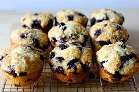

Blueberry Muffins

Description
This classic recipe will make 4 delicious blueberry muffins cooked to perfection.
Ingredients
- 1/2 cup unsalted butter
- 1 1/4 cups white sugar
- 1/2 tsp. salt
- 2 eggs
- 2 cups all-purpose flour
- 2 tsp. baking powder
- 1/2 cup buttermilk
- 1 pint fresh blueberries
- 2 tbsp. white sugar
Steps
- Preheat oven to 375 degrees. Spray muffin pan with non-stick coating
- Combine butter, sugar, and salt, then beat in eggs. Mix together flour and baking powder. Beat in flour mixture alternatively with buttermilk.
- Crush 1/4 of the blueberries and stir into batter. Mix the remaining blueberries with the remaining flour, and fold into batter. Scoop into muffin cups and sprinkle with sugar.
- Bake in preheated oven for 30 minutes.